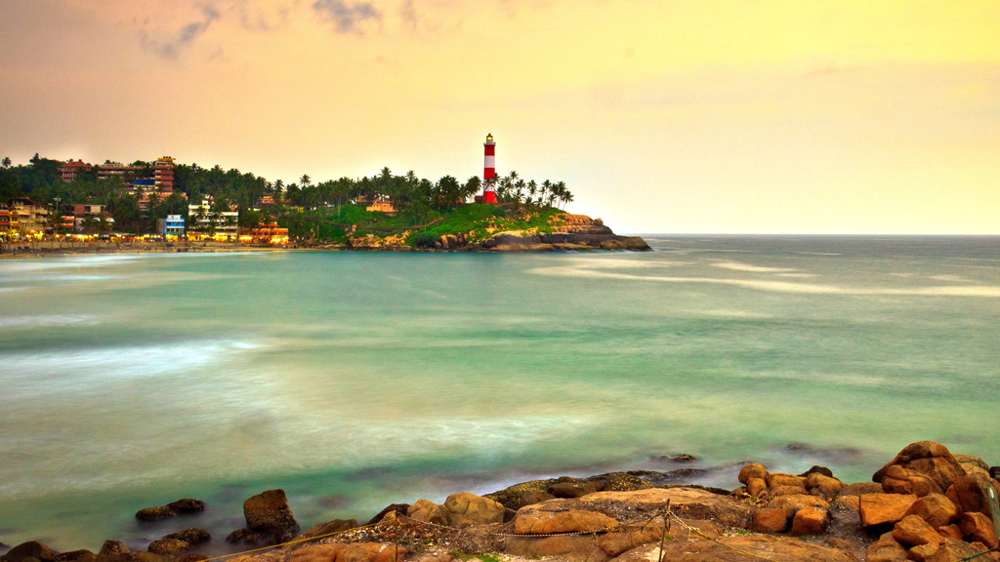

Experience Kerala
Top Destinations
Alleppey

There is the whole of Kerala in one side, and then there is this heavenly tourist destination called Alappuzha or Alleppey! Esteemed as the ‘Backwater Capital of India’ or the ‘Venice of the East’, Alleppey is known for its silent backwaters and bountiful beauty! Seated on the banks of the azure Vembanad Lake, it is in fact one of the most popular backwater destinations in Kerala and one of the highest sought-aftertourist places in Kerala. Visit this paradise; enjoy houseboat cruise and stay, village walks, Ayurvedic therapies and lot more!
Cochin

Kochi or Cochin is a unique placein God’s Own Country that is perfectly blended with cultural values and modern ideas! Fondly called the ‘Queen of the Arabian Sea’, this imposing port-city has always been an attraction point since the beginning of history. A melting point of numerous culture and traditions, Cochin has embraced all the modern outlook to become one of the most developed metropolis in India. Be it the essence of the Dutch establishments, or the traditional spice markets, Cochin will surely make you fall in love once again!
Kovalam
If you are a beach goer, and is still assuming none can beat the charm and allurement of Goa or other popular beach destinations, you must visit Kovalam today! Located along the coastlines of the charismatic Arabian Sea, this beach town is undoubtedly one of the best tourist attractions to visit in Kerala. Located only 16km from Thiruvananthapuram, the capital of Kerala.ou can stroll around, indulge in beach activities or in other fun-filled activities around Kovalam Beach, Lighthouse Beach, Hawah Beach, and Samudra Beach.
Vagamon

If you are looking for an offbeat, yet captivating holiday experience in Kerala, you must plan your vacation in Vagamon. One of the most scenic hill stations and least explored tourist places in Kerala, this retreat in the Idukki district is known for its salubrious beauty, pleasant climate, and much more. In addition to leisure travellers, thrill and adventure seekers also make it to Vagamon in a considerable number. A year-round destination, it is considered as an ideal destination for adventure activities like paragliding, mountaineering, rock climbing, trekking, and lot more.
Kuttanad

Fondly called as the ‘Rice Bowl of Kerala’, Kuttanad is truly a poetry in motion! Gracious, tranquil, evergreen, and still untouched by the outer world, this magnificent tourist destination in God’s Own Country is fringed with captivating groves of coconut trees. This makes Kuttanad a place to behold among the visitors. While the intrinsic network of canals add more to the beauty and charm of Kuttanad, its evergreen swaying paddy fields make it truly irresistible for the visitors. Also, the rustic and traditional way of living that still persists in this piece of heaven will surely make you feel and live the true colours of Kerala.
Thiruvananthapuram

The capital city of God’s Own Country, Thiruvananthapuram or Trivandrum, or the ‘Evergreen City of India’ is also the largest city in the state. Located at the south-western edge of Kerala, this city is the perfect example of how rural life gets mixed with the contemporary way of living. Dotted with numerous tourist spots, places of historical importance, scenic beaches, and much more, Trivandrum is a true treasure trove among visitors from all the walks of life. Rated as one of the finest Indian cities to live in, Thiruvananthapuram can also be called the ‘Economic Capital’ of Kerala.
Cuisine
Idiyappam With
Curry

One of the famous dishes of Kerala is Idiyappam which is relished by most of the people. Also known as Noolappam in Kerala cuisine, Idiyappam, food of Kerala, is made of rice flour, salt and water with a number of thin strands or sevai entwined together to make the lovely texture that this dish bears. It is this texture that makes it versatile. You can have it with all kinds of curries, but it tastes best with Egg Curry. Best places to eat: Saravana Bhavan, Jasmine Bay
Erissery
(Pumpkin & Lentil Stew)

Erissery is one of the famous dishes of Kerala which is savoured by travellers as well as local people in Kerala.It is typically prepared by boiling slightly sweet pumpkins with salt, chillies or pepper, dried lentils, grated coconut, turmeric powder, cumin seeds and garlic, and is served on a bed of rice. A favourite Kerala food item on the menu of religious festivals like Onam, Erissery provides the perfect culinary for foodies who are always on the lookout for new flavours! Best places to eat: Kashi, Mezban
Dosa Ghee Roast With Kerala Style Sambar
Food connects us all and if you are looking to have the best food in Kerala then do try dosa Ghee roast with Kerala style Sambhar which will blast your mouth with awesome flavours. Listed among the ‘World’s 50 Most Delicious Foods’, dosa and sambar in Kerala cuisine make up for a deadly combination! Made from fermented rice and lentils, the ghee roast dosa is first cooked to perfection in pure ghee, and then roasted till it gets as crisp as it can. It is, no doubt, the best food in Kerala district. Best places to eat: Jasmine Bay, Aditi Restaurant
Festivals
Onam
Onam is an annual Hindu holiday and festival celebrated in Kerala, India. According to legends, the festival is celebrated to commemorate King Mahabali, whose spirit is said to visit Kerala at the time of Onam. It is a 10 day long festival celebrated in the beginning of the month of Chingam, the first month of the Malayalam Calendar (Kollavarsham). Onam is a major annual event for Malayali people in and outside Kerala
Thrissur Pooram
Thrissur Pooram is an annual Hindu festival held in Kerala, India. It is held at the Vadakkunnathan Temple in Thrissur every year on the Pooram day - the day when the moon rises with the Pooram star in the Malayalam Calendar month of Medam. It is the largest and most famous of all poorams.
Aranmula Boat Race
Held in August-September every year on the Pampa River, Aranmula Boat Race is a part of the Aaranmula Temple festival. This temple is about 1700 year old lying on the banks of Pampa River and is dedicated to Sree Parthasarathy- the divine charioteer of Arjuna.